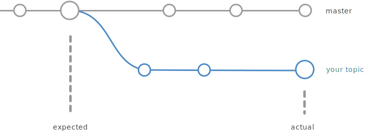

Features
Automatic Identification
reg-suit supports GitHub flow. reg-suit detects automatically the parent's commit which is the source of the topic branch. And use the snapshot result of the detected commit as the expected result of regression testing.

GitHub Integration
Installing the reg-suit GitHub app, you can receive the result of the comparison as a comment on the pull request associated with the regression testing. Your contributors and reviewers can recognize the differences at a glance.

Plugins
In addition to the above, there are plugins with various functions. Check them out here.